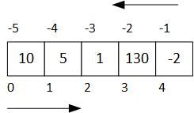

Listas y tuplas¶
Autores: Rogelio Mazaeda Echevarría, Félix Miguel Trespaderne.
Contenidos¶
Contenedores de datos
Listas
Operadores para listas
Funciones nativas y listas
Métodos de las listas
Creación de listas
Modificando una lista
Obteniendo información de una lista
Cadenas de caracteres (str) como colecciones secuenciales
Tuplas
Contenedores de datos¶
En muchas aplicaciones resulta conveniente ser capaz de almacenar en memoria, para luego manipular a conveniencia y de forma consistente, un determinado conjunto de datos.
Hasta el momento, hemos introducido tipos de datos escalares, int, float, complex, bool y str, datos que conceptualmente contienen un único valor. Pero, supongamos por un momento, que se desea retener un conjunto de 5 enteros en memoria, para luego manipularlos, posiblemente de diversas formas: sumándolos, o hallando el máximo de los mismos, o graficándolos, etc.
Con lo visto hasta ahora el recurso lógico es definir 5 variables enteras y tratarlas individualmente.
a0 = 10
a1 = 5
a2 = 1
a3 = 130
a4 = -2
suma = a0 + a1 + a2 + a3 + a4
¿Qué pasa si ahora se necesitaran 100 variables? Habría que crear otras tantas variables, con nombres diferentes y extender el código previo manteniendo la idea básica. Algo impracticable.
En Python los objetos de tipo contenedor (container) o colecciones (collections) cubren esa necesidad.
Contenedores en Python¶
Todos los lenguajes de programación brindan la posibilidad de trabajar con colecciones de datos de una forma consistente. Por ejemplo, en C/C++ se tiene el concepto de vector (array).
Python ofrece un conjunto de opciones muy efectivas y flexibles para resolver este tipo de problemas. Permiten representar colecciones o tipos de datos contenedores de forma nativa.
Los tipos contenedor más relevantes son:
Tipo |
Ejemplo |
Descripción |
|---|---|---|
|
|
Colección ordenada (mutable) |
|
|
Colección ordenada (inmutable) |
|
|
Tabla asociativa (clave, valor) |
|
|
Colección sin orden de valores únicos |
El uso de corchetes (listas), paréntesis (tuplas) o llaves (diccionarios y conjuntos) marca el tipo de contenedor.
La anterior tabla no agota todas las posibilidades, aunque si recoge los tipos contenedores más importantes. Un tipo de dato que ya conocemos, la cadena de caracteres (str), puede ser vista también como una colección de caracteres alfanuméricos.
De todas las anteriores, la lista, tipo list, es el tipo de datos contenedor más importante. Iremos introduciendo más adelante el resto de colecciones.
Listas¶
En la siguiente celda, se define una variable lista llamada lista_enteros asignándola una colección de valores caracterizada por:
una secuencia de literales enteros
separados por comas
delimitados por corchetes
lista_enteros = [10, 5, 1, 130, -2]
print(lista_enteros)
[10, 5, 1, 130, -2]
El concepto de lista impone necesariamente una relación de orden, una secuencia.
Observe además que la variable de tipo lista puede ser enviada como argumento real a la función print() que la interpreta correctamente y la saca por la consola de la forma esperada.
La variable lista_enteros representa a la colección completa. Pero este recurso del lenguaje no sería tan útil si no permitiera el acceso individual a cada uno de los enteros contenidos en la colección.
Indexación¶
Véase el ejemplo siguiente (se debe haber ejecutado antes la celda previa):
print(lista_enteros[0], lista_enteros[1], lista_enteros[4], lista_enteros[-1])
10 5 -2 -2
En la celda anterior, en lugar de enviar a print() la colección completa, se envían algunos de los enteros contenidos.
Para acceder a un miembro individual de la lista:
se utiliza un índice, siempre de tipo entero, que indica la posición del dato miembro dentro de la colección.
el índice se pone entre corchetes
al primer elemento de la secuencia le corresponde siempre el valor 0
Si se intenta acceder a un elemento no existente dentro de la colección se produce un error en tiempo de ejecución:
print(lista_enteros[5])
---------------------------------------------------------------------------
IndexError Traceback (most recent call last)
<ipython-input-3-37598d61b739> in <module>
----> 1 print(lista_enteros[5])
IndexError: list index out of range
A diferencia de otros lenguajes, Python permite que el índice pueda especificarse también desde la derecha, utilizando enteros negativos: en ese caso el índice -1 hace referencia al último elemento de la lista (o al primero desde la izquierda). Vea el siguiente esquema:

Dado que una lista implementa una secuencia, el elemento de índice i aparece siempre antes que el elemento i+1 si se está recorriendo la lista desde la izquierda.
Mutabilidad¶
Una lista es, además, una colección mutable. Esto quiere decir que se pueden:
modificar los elementos de la lista
borrar determinados elementos
añadir elementos nuevos
etc.
En la celda siguiente, se modifica el elemento de índice 0 de lista (que aparece a la izquierda de la asignación) por el valor que resulta de la suma de los elementos de índice 1 y 2 (el segundo y el tercer elemento desde la izquierda). Luego se le añade el valor 4. Podemos observar mediante la función id() que la identidad del objeto no ha cambiado, pero su valor sí.
lista = [0, 1, 2, 3]
print(id(lista))
lista[0] = lista[1] + lista[2]
lista.append(4)
print(id(lista))
print(lista)
2409751788360
2409751788360
[3, 1, 2, 3, 4]
(*) Elementos con tipos heterogéneos¶
Las listas no necesariamente tienen que contener elementos del mismo tipo de dato. Aún más, un elemento de la lista puede ser a su vez otra lista (listas anidadas) u otro tipo de colección. Véase siguiente ejemplo:
notas = ["Fundamentos de Programación", 1, [10.0, 7.8, 6.7, 9.5, 3.3, 7.5, 6.3, 0.5, 4.2, 7.1]]
print("Asignatura", notas[0], "Curso", notas[1])
print("Notas:", notas[2])
Asignatura Fundamentos de Programación Curso 1
Notas: [10.0, 7.8, 6.7, 9.5, 3.3, 7.5, 6.3, 0.5, 4.2, 7.1]
La lista asignada a la variable notas tiene:
como primer elemento (índice
0) una cadena de caracteres (str)como segundo elemento (índice
1) un entero (int)como tercer elemento (índice
2) una lista (list) cuyos elementos, en este caso particular, son todos de tipofloat. En este caso, podrían ser las notas de 10 alumnos.
Para las listas con elementos homogéneos, el equivalente en C/C++ sería el array. En el caso de elementos de diferente tipo, la equivalencia podría asimilarse a las estructuras de C/C++ (también denominadas como registros en otros lenguajes de programación).
Si se quisiera acceder a las notas del cuarto alumno, observe la sintaxis, que involucra el uso de dos corchetes:
con el primero se accede al tercer elemento de la lista original
con el segundo al cuarto elemento de la sublista resultante
notas[2][3]
Otra forma de ver el resultado anterior es crear una variable para obtener la sublista y luego acceder a la nota:
listado_notas = notas[2]
print(listado_notas[3])
Ya hemos comprobado que la función print() sabe como imprimir listas en la consola de salida o pantalla.
Python dispone de operadores y funciones nativas que permiten realizar tareas útiles con ellas. Como cualquier variable en Python, las listas son objetos que disponen de métodos para acceder y/o modificar su estado si es preciso.
Operadores para listas¶
Los siguientes operadores son reinterpretados o (sobrecargados) para trabajar con listas:
Operadores de creación de nuevas listas
Operador |
Descripción |
|---|---|
|
Concatena listas |
|
Añade lista a lista existente |
|
Crea nueva lista a partir de repetir un número de veces una lista existente |
Operadores de comparación
Operador |
Descripción |
|---|---|
|
|
|
|
|
|
|
|
|
|
|
|
Operadores de pertenencia
Operador |
Descripción |
|---|---|
|
|
|
|
Funciones nativas y listas¶
Una relación no completa:
Funciones generales que también aceptan listas:
Función |
Descripción |
|---|---|
|
Saca la lista por consola |
|
Aplicada a la lista la identifica como tal |
Funciones específicas para listas (o colecciones similares):
Función |
Descripción |
|---|---|
|
Devuelve el número de elementos |
|
Crea una lista a partir de una secuencia |
|
Ordena la lista |
|
Determina el máximo |
|
Determina el mínimo |
Métodos de las listas¶
Las listas, como cualquier entidad en Python, son objetos. Por tanto, se puede modificar u obtener información de una lista recurriendo a los métodos definidos para este tipo de objeto.
Método |
Descripción |
|---|---|
|
Añade un único elemento al final de la lista |
|
Añade varios elementos al final de la lista |
|
Inserta elemento en posición indicada |
|
Elimina elemento al final de la lista |
|
Elimina elemento indicado de la lista |
|
Borra todos los elementos de la lista |
|
Realiza una copia superficial |
|
Cuenta apariciones de un elemento |
|
Devuelve el índice de primera aparición de elemento |
|
Invierte la secuencia de la lista |
|
Ordena la lista |
Puede consultarse aquí una lista completa de los métodos de los objetos list.
Creación de listas¶
Las listas pueden ser creadas de diferentes formas. Previamente hemos visto algunas de ellas, en lo que sigue veremos algunas otras.
De forma explícita¶
# Asignando valores con la sintaxis habitual
x = 1.1
y = 2.3
z = 5.0
num_reales = [x, y, z]
Mediante la función nativa range()¶
La función nativa range() genera un objeto que consiste en una secuencia de enteros. Admite diferente número de argumentos:
cuando es utilizada con dos argumentos enteros,
range(start, stop), es capaz de generar todos los enteros en el intervalo semiabierto \([start, stop)\).si se usa un solo argumento,
range(stop), entonces se generan los enteros en el intervalo \([0, stop)\).en su forma más general, con tres argumentos,
range(start, stop[, step]), el argumentostepindica el incremento o paso entre un entero y el siguiente. Por defecto tiene el valor 1.
# Creación de listas de enteros utilizando la función list() y el generador range()
a = list(range(20, 30, 2))
print(a)
a = list(range(30, 20, -2))
print(a)
[20, 22, 24, 26, 28]
[30, 28, 26, 24, 22]
Concatenando listas¶
Para ello se usan los operadores + o +=.
# Concatenando listas
a = [1, 4, 10] + [5, 6] + [1, 0]
print(a)
a += a
print(a)
Repitiendo una lista un número de veces¶
También se define la multiplicación (operador *) de una lista por un entero \(n\). El resultado es la repetición de la lista \(n\) veces. Resulta un recurso conveniente para inicializar una lista de tamaño conocido con un valor o un patrón dado.
num = 10
lista = [0]*num
print("Una lista de {} elementos inicializada a 0:\n{}".format(num, lista))
Una lista de 10 elementos inicializada a 0:
[0, 0, 0, 0, 0, 0, 0, 0, 0, 0]
Modificando una lista¶
Añadiendo elementos¶
El método .append() invocado desde un objeto lista concreta añade un único elemento al final de la lista (dicho elemento podría ser otra lista). El método .extend() permite extender la lista aplicando varios elementos a la vez.
# Creando una lista vacía e ir añadiendo elementos mediante métodos append() y/o extend()
a = [] # ¡Lista vacía!
a.append(1)
a.extend([3, 2, 'hola'])
print(a)
[1, 3, 2, 'hola']
Mediante el operador +=¶
También se pueden utilizar la sentencia compuesta de asignación +=, para añadir elementos al final de una lista, como se muestra a continuación:
a = []
a += [1, 2, 3]
print(a)
[1, 2, 3]
Insertando elementos en una posición arbitraria¶
Se hace uso del método .insert() que posee dos parámetros, la posición (un entero) y el elemento único a insertar (si elemento es a su vez una lista, se inserta como una sub-lista).
a = [1,2]
a.insert(1,3)
print(a)
[1, 3, 2]
Borrando elementos de la lista¶
La función del() tiene el propósito de borrar valores de la memoria del ordenador. Puede aplicarse a variables simples (tipo int, float, etc) y a variables que representan colecciones o secuencias.
Si se aplican a la lista en su conjunto, la borran completamente de la memoria del ordenador, de forma que cualquier acceso posterior a ella daría un error de ejecución.
Pero la función del()también puede ser usada para borrar elementos concretos de la lista de la forma que se muestra a continuación:
a = ["lista", "palabras", "sueltas", "representadas", "por", "cadenas"]
del a[1]
print(a)
['lista', 'sueltas', 'representadas', 'por', 'cadenas']
Otros tres métodos nos permiten borrar elementos:
.pop()reduce el tamaño de la misma en uno, eliminando el último elemento si se pasa sin argumentos o el elemento cuya posición es indicada en el argumento. A diferencia dedel(), este método devuelve el elemento eliminado..remove()permite borrar la primera aparición del elemento que se pasa como parámetro..clear()borra todo el contenido de la lista, haciendo que esta al final esté vacía.
lista = ["lista", "palabras", "sueltas", "representadas", "por", "cadenas"]
valor = lista.pop()
print("Con pop() hemos eliminado el elemento \'{}\'.".format(valor))
valor = lista.pop(2)
print("Con pop(2) hemos eliminado el elemento \'{}\'.".format(valor))
lista.remove('palabras')
print("Usando remove('palabras') eliminamos el primer elemento que coincide con 'palabras'")
print(lista)
lista.clear()
print("Con clear() la lista se vacía.", lista)
Con pop() hemos eliminado el elemento 'cadenas'.
Con pop(2) hemos eliminado el elemento 'sueltas'.
Usando remove('palabras') eliminamos el primer elemento que coincide con 'palabras'
['lista', 'representadas', 'por']
Con clear() la lista se vacía. []
Obteniendo información de una lista¶
La función intrínseca (built in) de Python len() devuelve el tamaño de la lista que se pase como parámetro.
lista = [1, 2]*5
tam = len(lista)
print("La lista {} tiene tamaño {}".format(lista, tam))
La lista [1, 2, 1, 2, 1, 2, 1, 2, 1, 2] tiene tamaño 10
El operador de pertenencia in sirve para comprobar si un elemento determinado se encuentra en la colección. Devuelve un valor de True si el elemento aparece en la lista y False en caso contrario.
3 in [1, 20, 3, [20,4]]
True
3 not in [1, 3, 4]
False
5 in range(20)
True
Como habrá notado, Python ofrece varias alternativas similares para llevar a buen puerto el objetivo buscado.
Podemos conocer si un elemento está en una lista mediante el método
count(), que además devuelve cuántas veces el elemento aparece.El método
index()por su parte nos indica el índice de la primera aparición en la lista (si elemento no está se genera error de ejecución).
a = [1, 2, 4, 2]
valor = 2
veces = a.count(valor);
print('El {} aparece en la lista {} en {} posiciones.'.format(valor, a, veces))
print('La primera vez aparece en la posición', a.index(valor))
Cadenas de caracteres (str) como colecciones secuenciales¶
Ya conocíamos, sin haberlo reconocido, otro tipo de colección. Las cadenas de caracteres pueden concebirse como secuencias de caracteres alfanuméricos. La mayor parte de las veces, se trabaja con las cadenas tomándolas en su conjunto. Pero es perfectamente posible acceder a los caracteres individuales, utilizando los conceptos vistos previamente.
cadena = "La cadena de caracteres es una secuencia"
car1 = cadena[0]
car2 = cadena[-1]
print('La frase "{}" tiene una longitud {}. Comienza por \'{}\' y termina por \'{}\'.'.format(cadena, len(cadena), car1, car2))
La frase "La cadena de caracteres es una secuencia" tiene una longitud 40. Comienza por 'L' y termina por 'a'.
A diferencia de las listas, las cadenas de caracteres son objetos inmutables.
cadena = "hola"
cadena[0] = 'H'
---------------------------------------------------------------------------
TypeError Traceback (most recent call last)
<ipython-input-7-885208d36d00> in <module>
1 cadena = "hola"
----> 2 cadena[0] = 'H'
TypeError: 'str' object does not support item assignment
Tuplas¶
Las tuplas representan, al igual que las listas, una secuencia de valores en Python. Los valores, también en este caso, pueden ser de diferente tipo.
A diferencia de las listas, las tuplas son inmutables: una vez creadas no pueden modificarse.
Una tupla se crea asignando un conjunto de valores a una variable. Los valores están separados entre sí por una coma y opcionalmente pueden estar rodeados o no de paréntesis.
Por ejemplo:
datos_asig = ('Fundamentos de Programación', 40, 1, 2)
print(datos_asig)
otro = 1, 2, 3
print(otro)
('Fundamentos de Programación', 40, 1, 2)
(1, 2, 3)
Nótese que, aunque los paréntesis son opcionales, aportan una mejor legibilidad.
Aunque su utilidad es cuestionable, se pueden crear tuplas de un solo elemento. Cómo podría existir ambigüedad con el uso de los paréntesis como recurso para agrupar expresiones, al crear una tupla de un sólo elemento se tiene que poner una coma al final.
un_elemento = (10,)
print(otro[0] + otro[1])
Como se observa en el código previo, se pueden acceder a los elementos de las tuplas, utilizando para ello la sintaxis de los corchetes (de manera similar a las listas).
Sin embargo, dado su carácter inmutable, lo que no se puede es modificar los valores ni el tamaño de la tupla una vez creada.
a = (1, 2, 3)
a[1] = 10 # La ejecución de esta línea provoca un error
---------------------------------------------------------------------------
TypeError Traceback (most recent call last)
<ipython-input-9-eaa8d3bc1a70> in <module>
1 a = (1, 2, 3)
----> 2 a[1] = 10 # La ejecución de esta línea provoca un error
TypeError: 'tuple' object does not support item assignment
Se pueden crear tuplas a partir de listas, utilizando la función tuple() de la forma que se muestra:
elem_lista = [1, 2 ,3]
elem_tupla = tuple(elem_lista)
Recíprocamente, se pueden crear listas a partir de tuplas utilizando la función list(). Nótese en el siguiente ejemplo, que el identificador tupla referencia a un objeto diferente después de la conversión desde una lista. Para ello, hemos utilizado la función nativa id(), que devuelve la dirección en memoria donde reside el objeto. Por tanto, no se viola la inmutabilidad de la tupla.
tupla = ('Matrícula', 40)
print('Dirección original de tupla:', id(tupla))
lista = list(tupla)
lista[1] = 50
tupla = tuple(lista)
print('Dirección nueva de tupla:', id(tupla))
print(tupla)
Dirección original de tupla: 2144608734536
Dirección nueva de tupla: 2144609150664
('Matrícula', 50)
Operaciones con tuplas¶
Puede consultarse aquí el conjunto de operadores, métodos y funciones que son comunes a todos las secuencias listas y tuplas.
Las operaciones con tuplas serán un subconjunto de las vistas con las listas y la regla básica es que la operación en cuestión no será válida para una tupla si pretende una modificación de los datos del objeto tupla, que es inmutable.
Se pueden comparar las tuplas utilizando los operadores conocidos (>, <=, >=, etc.). También se puede utilizar el operador especial de pertenencia (in) para saber si un elemento pertenece a la tupla o no.
Funciones como len(), que brindan información sobre la secuencia, son igualmente utilizables.
a = 1, 2, 3, 4, 5
print('El tamaño de la tupla es:', len(a))
print('¿Contiene el elemento 4?', 4 in a)
El tamaño de la tupla es: 5
¿Contiene el elemento 4? True
Desempaquetado de una tupla¶
Los elementos de una tupla se pueden asignar a tantas variables como elementos haya en la misma en un proceso llamado desempaquetado (unpacking).
datos_ciudad = ('Valladolid', 'Castilla y León', 'España')
ciudad, comunidad, pais = datos_ciudad
print(ciudad, comunidad, pais)
Valladolid Castilla y León España
En el ejemplo se han creado nuevas variables con nombre: ciudad, comunidad y pais que contiene las cadenas de caracteres incluidas en las posiciones 0, 1, 2 de la tupla datos_ciudad.
Nótese que, en realidad, el desempaquetado es el mecanismo del lenguaje que se pone en juego cuando se hacen asignaciones múltiples en Python:
a, b = 1, 2
Un código como el anterior funciona primero como el empaquetado o creación de una tupla con los elementos 1 y 2 (nótese que los paréntesis son opcionales) y el posterior desempaquetado o asignación a las variables a y b.
Veremos la utilidad de este esquema a lo largo del curso. Recordad que, en particular en muy útil para el intercambio de los valores de dos variables: una operación que se requiere con alguna frecuencia en programación:
x = 2
y = 3
x, y = y, x
print('x = ', x, 'y = ', y)
x = 3 y = 2